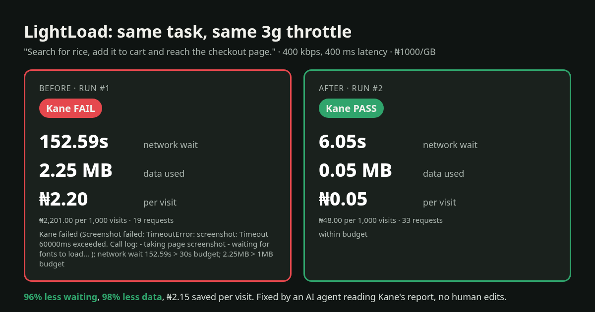

The same FreshMart Lagos shop, tested by Kane CLI on throttled 3G (400 kbps, 400 ms). Open both on your phone and feel the difference.
Before: heavy shop (~13 MB home page, Kane FAIL) After: agent-fixed shop (0.05 MB for the whole task, Kane PASS)